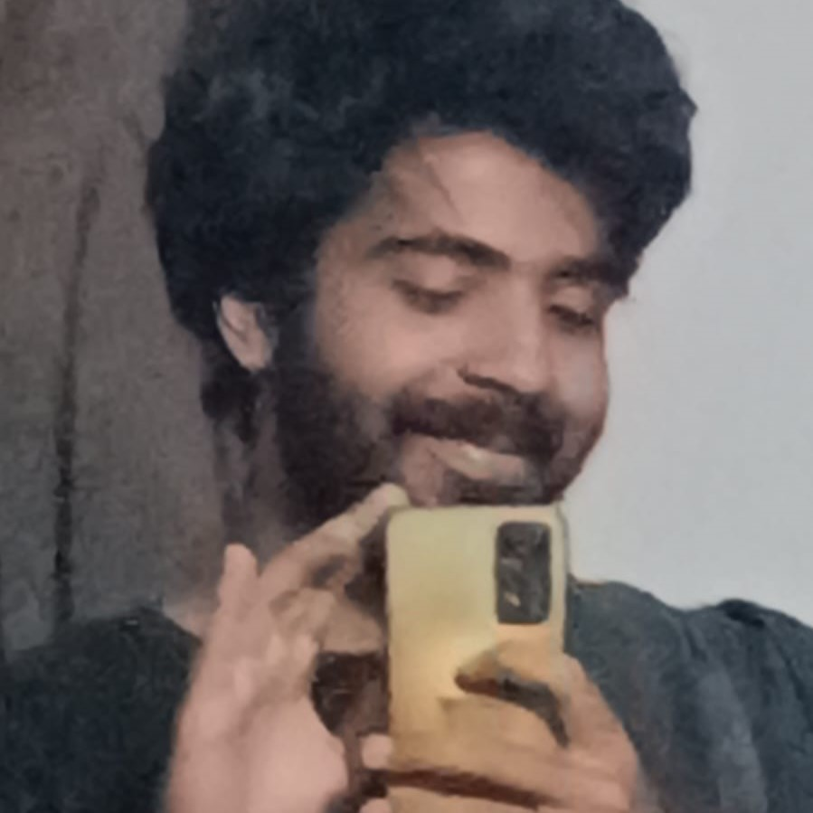

Age : 20
Gender : Male
Tahir Shah lover
Son of Saad_Alightmotion

Haider
Tap to expand
Known as @haiderdoesedits on Instagram, is a talented VFX artist with a keen eye for detail and a passion for bringing imagination to life through visual effects. His work showcases a blend of creativity and technical expertise, transforming ordinary scenes into extraordinary visual experiences. With a growing portfolio of stunning edits, Haider continues to captivate audiences and push the boundaries of what's possible in the world of VFX.
Haider
The Journey of a Young VFX Artist and Football Enthusiast
Introduction
At just 20 years old, Haider is carving out a notable niche for himself in the world of visual effects (VFX). His passion for VFX is matched only by his love for football, creating a unique blend of interests that define his vibrant personality. Known as @haiderdoesedits on Instagram, Haider's journey is a testament to the power of creativity, dedication, and the pursuit of one's passions.
Early Life and Interest in VFX
Haider's fascination with visual effects began at a young age. Growing up, he was captivated by the magic of movies and the stunning visuals in video games. This early exposure ignited a curiosity about how such effects were created. As he delved deeper into the world of VFX, Haider's interest transformed into a full-fledged passion. He began experimenting with different software, learning the intricacies of digital effects, and honing his skills through countless hours of practice.
Building a Portfolio
Haider's dedication to his craft is evident in his growing portfolio of work. Each project is a testament to his technical prowess and creative vision. From transforming ordinary scenes into extraordinary visual spectacles to creating entirely new worlds, Haider's work showcases a blend of imagination and expertise. His Instagram account, @haiderdoesedits, serves as a digital gallery of his best work, attracting followers who admire his talent and creativity. Through his posts, Haider not only shares his art but also connects with a community of like-minded individuals who share his passion for VFX.
Passion for Football
Beyond the world of VFX, Haider is an avid football fan. His love for the sport is as intense as his dedication to his work. Football offers Haider a different kind of excitement and joy. Whether it's watching his favorite team play, discussing match strategies with friends, or playing a casual game, football is an integral part of Haider's life. This passion for the sport provides a perfect balance to his professional pursuits, giving him a way to relax and recharge.
Balancing Work and Play
One of the remarkable aspects of Haider's journey is his ability to balance his professional and personal interests. Despite the demands of his work in VFX, he ensures that he always has time for football. This balance is crucial for maintaining his creativity and enthusiasm in both areas. By dedicating time to his hobbies, Haider keeps himself motivated and energized, which in turn enhances his productivity and creativity in his professional work.
Inspiration and Aspiration
Haider draws inspiration from various sources. In the world of VFX, he looks up to industry leaders and pioneers who have pushed the boundaries of visual storytelling. Their work motivates him to continually improve his skills and explore new techniques. In football, Haider finds inspiration in the determination and teamwork displayed by players on the field. The discipline and perseverance required in sports resonate with him, influencing his approach to both life and work.
Looking ahead, Haider has ambitious goals for his future. He aspires to work on major film and gaming projects, contributing his unique vision and skills to the creation of groundbreaking visual experiences. Additionally, he hopes to continue growing his presence on social media, using platforms like Instagram to share his journey and inspire others who share his passion for VFX.